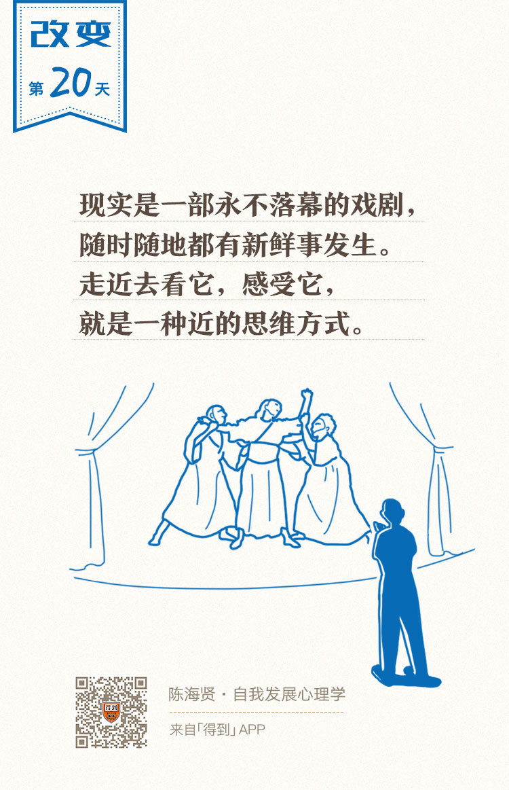

20丨正念思维：如何活得不焦虑？

欢迎来到《自我发展心理学》。
你好，我是陈海贤。
我们说，一条河流要流动起来，有三个条件：张力、河道和源头活水。
前面的课程里，我们讲到了前两个条件：创造性目标带来的张力和让张力变成行动力的方法。这节课，我们来看河流流动的第三个条件——源头活水，也就是与现实接触。
近的思维方式：与现实接触
为什么说现实是源头活水？
我在想这一讲内容的时候，去运河边走了走。运河边的花都开了，桃花、樱花、梨花，五颜六色，很多蜜蜂正忙着采蜜，清风拂面，水波荡漾，孩子们绕着广场跑来跑去。一个父亲懒懒地坐在椅子上，偶尔瞟一眼不远处的孩子。
现实就是一部永不落幕的戏剧，随时随地都有新鲜事发生。唯一不同的是，走近它，感受它，其实这是一种近的思维方式。
这是什么意思呢？
近的思维方式，就是关注真实的、正在发生的、近的事情。这些事情是流动的、不断发生着变化的。
那相对应的，另一种思维方式就是远的思维方式，指的是关注想象中的、抽象的、远的事情。这些事情常常是静止的、僵固的，是我们头脑中已有的东西。
近的思维会不断跟现实接触，让现实改变自己的思维方式，是一条不断有源头活水的河流。而远的思维，是只注重头脑中已有的规则，这些规则让你只能看到你想看到的东西，这是一种拒绝改变的思维方式。
从某种意义上说，我们前面所说的僵固思维、应该思维和绝对化思维，是同一种思维方式——远的思维方式。
为什么这么说呢？
僵固型思维不是看重你现在正在做的事情，不是看你付出的努力，而是评价你这个人怎么样，聪明不聪明，这是远的思维；
应该思维只执着于头脑中已有的规则，而不关注现在正在发生的事情，这也是远的思维；
绝对化的思维方式呢？把一件现在发生的坏事，用永久的、普遍的和人格化的方式进行概括、推演，这就是远的思维。
其实，远的思维的存在，也是有道理的。
你面对的信息无穷无尽，所以你必须要把这些信息封装起来装到我们的头脑里，让它们变成了我们头脑中的概念、观点、评价，变成了一些刻板印象。
远的思维能够帮助我们省略加工需要的认知资源，同时，因为抽象和规则化，它让我们面对的世界有了更多的确定性。
但是，远的思维也限制了我们的成长。
如果固守这些远的思维方式，你就看不到正在发生的事情，新的东西就不会进来，你的思维也不会有什么变化。
打个比方，远的思维像是看电视，你觉得自己能看得很清楚，但你看到的，都是电视导演想让你看的；
而近的思维呢？像是在现场，也许细节太多，你会被淹没，但是你会看到更多、更真实的东西，因为你就在那里。
在学习正念的时候，我的老师曾跟我说，很多时候，我们的心都是浮的，有很多念头产生，这些念头把我们带离到此时此地。
为了让心安顿下来，你就需要有一个焦点。
如果你在这个焦点上保持足够长的时间，你就会变得专注。而你一专注，你就在这件事里面了，就像在现场一样。
正念很强调专注当下，强调此时此刻。这跟近的思维强调的东西是一样的。所以我也把近的思维方式，叫做正念思维。
正念思维的三条原则
那么，我们要如何学习近的正念思维呢？
其实，思维是以语言为载体的。学习一种新的思维方式，就是学习一种新的语言。
经常会有焦虑的来访者跟我说：“这一切有什么用呢？”“我为什么总是这么糟糕？”“我根本做不到！”“一切”“总是”“根本”，这些关键词，就是远的语言的特征。
它们是非常概括和抽象化的，当我们用这种方式思考的时候，基本上没有我们能够控制的事情了，除了自我厌恶和自我谴责，我们对此也无能为力。相反，近的思维却是生动的、丰富的，充满了变化的可能性的。
怎么来学习近的思维呢？我给你总结了三条原则。
第一条原则：用描述性语言，而不用评价性的语言。
所谓的描述性语言，就是不加自己的评价，少用形容词，而尽量用动词来描述正发生的事情。
这有点像镜头语言，在电影里，一个导演是不会告诉你他是怎么想，或者主角怎么想的，它只会如实呈现演员的表情、动作和对话，让你自己去感受。而你感受到的，都是很近的、很鲜活的东西。
为什么要用描述性语言而不用评价性的语言呢？
因为评价性的语言已经用我们头脑中的观点、概念对信息进行了封装和加工，它会阻碍变化的发生。
在心理咨询里，用描述性语言描述咨询室里发生的事情，是一个心理咨询师的基本功。
假如一个人说“这个妈妈很控制”，“这个女儿乖乖的很听话”，那他在想法里，就已经不自觉地把她们放到了一个很难改变的位置。
所以，咨询师只会说：“这个妈妈在咨询室里指着女儿说，我不允许你这样做，而女儿则低着头一言不发。”
注意一下这两种语言的区别。在后一种语言里，你会好奇发生了什么，接下来会发生什么，好奇她们心里是怎么想的，可是如果你只是说“这个妈妈很控制”，那就很难有进一步探索的空间了。
第二条原则：问具体的问题，而不是抽象的问题。
作为一个心理咨询师，经常有人问我他们在生活中遇到的困惑。这些问题经常是这样的，“老师，我很内向怎么办？”“老师，我容易紧张怎么办？”“老师，我有拖延症该怎么办？”
他们在用很远的语言描述自己的问题，他们的提问方式正反映了他们思维的方式。他们就是在用抽象的、概括化的思维方式思考问题，这让他们的问题很难找到答案。而这，也正是他们的问题。
如果在咨询室里，有人问我类似“我很内向，每次遇到人都很紧张”这样的问题，我就会问他们：
“遇到哪些人你容易紧张，遇到哪些人不会呢？在什么场合你容易紧张，什么场合不会呢？在与人相识的哪个阶段你容易紧张，哪些阶段不会呢？最近你在跟谁交往呢？感觉怎么样呢？”
我这么问的目的，是希望他们用近的语言去描述他们的生活，以及他们在生活中的各种关系。我想告诉他们，紧张不是因为他们内向——不是说这不对，而是说这太远了。
你只有真的看到相处的过程中发生了什么，你才能看到你能够控制的部分，才能找到可能的出路。
第三条原则：关注现在能做的事，而不是关注事情的结果。
在用远的语言思考时，我们总是先去判断一个事情的结果，评价一件事有没有用，再来决定要不要做。
在时间上，先有做事，然后才会有“有用没用”。
很多时候，“有用没用”只有等做完一件事才会知道。可是，正是我们头脑中预想的“有用没用”的结果，让我们失去了行动的能力。
我有一个来访者，正为未来的事情忧虑，总觉得自己做什么都没有用。我说，不如我们现在用很近的语言来想想。现在你只要问自己两个问题：
第一个问题：你现在能做什么？
第二个问题：你愿不愿意去做？
我希望通过这样的问题，把他的注意力引到此时此地。
可是他说：“我现在就在想，这有什么用呢？”
于是我说：“你已经熟悉了远的语言，稍不注意，这种语言就会挤进来。现在，不如让我们来试试另一种语言。你能回答一下，你现在能做什么吗？就算你没有那么大的力气去做。”
来访者愣了一会，说：“我可以去散步、找朋友聊天、品尝美食……”每说完一个项目，我就跟他确认一下，这是你能做的，他点头称是。等他说完，我问他：“哪一件是你愿意的呢？”
他说：“我都不愿意。”他想跟我解释为什么不愿意。
我说：“没关系，你不愿意，就停在这里。”
相比于一个人的不愿意，“为什么不愿意”又是远的思维了。我希望来访者把注意力放到近的地方，而且我也想给他这样的暗示：你能控制自己的行为，也愿意对自己的行为负责。
他想了一下说：“我并不是不想试。可是我担心，我会不会真的去做。”
我说：“那么，为了真的去做，你现在能做的是什么呢？”
他想了想，说：“我可以做一个笔记，把那两个问题浓缩成一两句话背下来。当我焦虑的时候，我可以翻出来提醒自己。”
“好的。那你愿意做吗？”我问他。
他说：“我愿意试试。”
于是，这段咨询被浓缩成了两个问题：“我现在能做什么？我愿意做吗？”
在接下来的一个星期，他不断用这两个问题来提醒自己，不要想太远的东西。这帮助他减轻了焦虑。
如果你在为一些远的事情焦虑，也可以用这两个问题把自己的思维拉回到现在来：我现在能做什么？我愿意做吗？
其实，心理咨询是很注重讲话的语言的。有什么样的语言，就有什么样的思维方式。僵固的思维有僵固的语言，而成长的思维方式背后也有能够容纳变化的语言。
语义学家温德尔·约翰逊（Wendell Johnson）说：
近的思维就是发展一种能够容纳变化的语言。相信如果你多练习这种变化的语言，你的思维也会有很多的变化产生。
总结一下，今天我们讲了让思维这条河流动起来的第三个条件——与现实接触。而近的思维就是一种与现实接触的思维。
我们还讲了近的思维的三个原则：
第一，用描述性语言，而不是评价性语言；
第二，问具体的问题，而不是抽象的问题；
第三，关注现在能做的，而不是关注远的结果。
今天的课就到这里。我给你留一道思考题：
下节课是我们思维发展的最后一课，我想跟你聊聊思维进化这件事本身。
我们下节课见。
